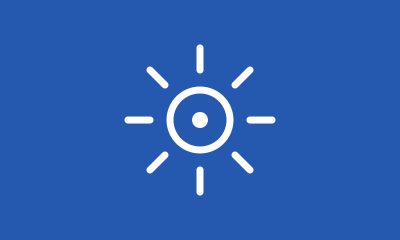

Urbana
Ligera y cómoda para moverte por la ciudad.

Ambos ejemplos muestran la misma flota adaptable. El primero usa las clases Grid propias del sitio; el segundo, las filas, columnas y utilidades de Bootstrap.
Ligera y cómoda para moverte por la ciudad.
Lista para rutas y terrenos exigentes.

Más asistencia para llegar más lejos.

Ligera y cómoda para moverte por la ciudad.
Lista para rutas y terrenos exigentes.
Más asistencia para llegar más lejos.